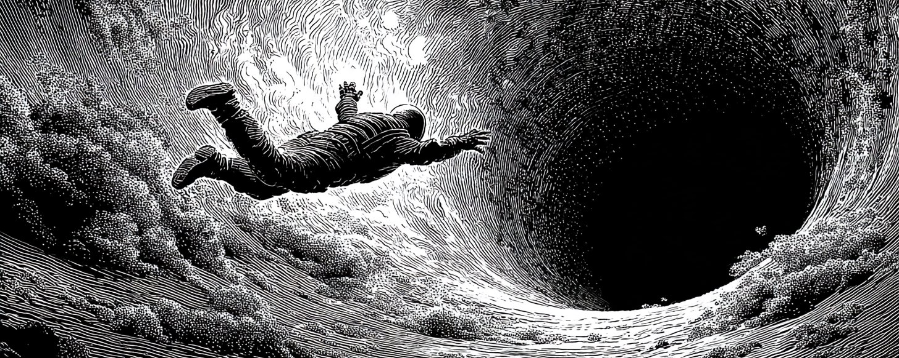
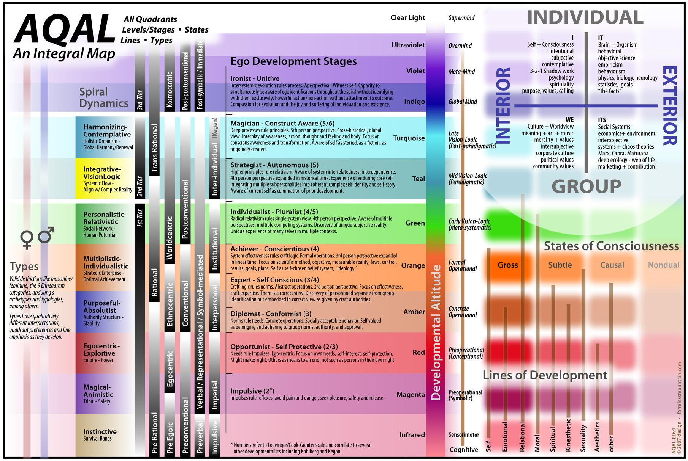
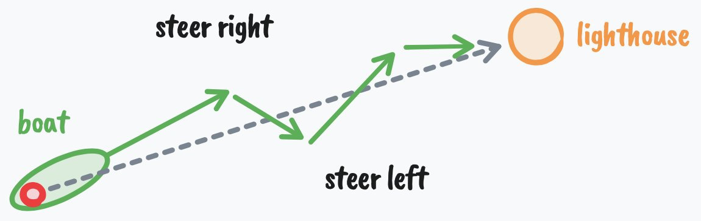

How to fix your entire life in 1 day
用一天修好整个人生
- 分类
- 认知
- 来源
- X · @thedankoe
- 原文
- 整理
- 作者
- DAN KOE / @thedankoe
- 原文链接
- 原文
先看这五句 / Highlights
译者补充，不是原文。
- 先换人，再换事。表面目标 + 两周自律几乎总会失败；你要先成为「那种人」，让行为自然跟上。
- 行为全是目标导向的。拖延、赖在烂工作里，往往在保护你免于评判与失败感——真正要改的是目标与视角，不是口号式自律。
- 身份像催眠。童年条件作用固化信念；身份受威胁时会战或逃。想要的人生落在特定心智层级（Maslow / Spiral Dynamics / AQAL / Human 3.0）。
- 智力 = 从人生里拿到你想要的。赛博控制论：有目标 → 行动 → 感知 → 对照 → 再行动。低智力卡在问题上；高智力在足够长的时间尺度上迭代。
- 一天协议 + 人生游戏化。早：心理挖掘与反愿景/愿景；日：打断自动驾驶；晚：综合成一年/一月/每日镜头。再把反愿景、愿景、项目、日常杠杆、约束写成你自己的「游戏」。

如果你和我有几分像，大概也觉得新年决心挺蠢的。
因为多数人改变人生的方式完全错了。他们立下这些决心，只因为别人都在立——我们从地位游戏里编造一层表面意义——但它们并不满足真正改变的条件。真正的改变，远比说服自己「今年要更自律、更高效」深得多。
如果你也是这类人，我不是来贬低你的（我写东西有时会刺一点）。我放弃过的目标，比达成过的多十倍。我觉得多数人本来就该如此。但「人们试图改变人生，却几乎次次惨败」这件事，始终成立。
不过，尽管我觉得新年决心蠢，反思自己讨厌的生活、好把自己弹射向更好的东西，却始终是明智的——我们接下来就会谈。
所以，无论你是想创业、重塑身体，还是冒一次险去过更有意义的生活、却不想两周就放弃：我想分享七个你大概没听过的想法，关于行为改变、心理与生产力，好让你在 2026 年真正做到。
这会写得很全。
这不是那种读完就忘的信。
你会想收藏它、做笔记、专门留时间去想。
文末那套协议（深入挖掘你的心理、挖出你真正想要什么）大概要花一整天完成，效果却远不止一天。
开始吧。
I – 你之所以不在想去的地方，是因为你还不是会到那里的人
谈到立大目标，人们往往只盯着成功的两项要求里的一项：
- 改变行动，朝目标推进（最不重要，二阶）
- 改变你是谁，好让行为自然跟上（最重要，一阶）
多数人设一个表层目标，给自己打气撑过前几周的自律，然后几乎不怎么挣扎就退回旧路——因为他们是在腐烂的地基上盖一座伟大人生。
若这听起来不直观，我们举个例子。
想一个成功的人。可以是身材极好的健美运动员，可以是身家数亿的创始人/CEO，也可以是能跟一群人聊天、脑子里半点焦虑都进不去的魅力型家伙。
你觉得健美运动员吃健康要「硬扛」吗？CEO 要强迫自己出现并领导团队吗？在你看来表面或许如此，真相却是：他们无法想象自己过别样的生活。健美运动员要硬扛的，是吃不健康。CEO 要强迫自己的，是闹钟响了还赖在床上，而且每一秒都讨厌（这里有细微差别，先顺着我往下听）。
对某些人来说，我自己的生活方式显得有点极端、有点自律。对我来说，它是自然的——我说这话，并不是为了拿它跟别的生活方式对照。我只是享受这样活着。当我妈跟我说该休息一下、出去玩玩……我按住没说出口的是：「如果我不觉得好玩，我为什么还在做我在做的事？」
下一句听起来可能简单，但令人费解的是，有多少人就是不懂。
如果你想要人生里某个特定结果，你必须在到达它很久之前，就先拥有能创造出那个结果的生活方式。
如果有人说想减掉三十磅，我常常不信。不是因为我觉得他们做不到，而是因为同一个人太多次说过：「真盼着减完肥，好重新享受生活。」我很不想泼冷水，但如果你不终身采用那个让你减下来的生活方式，也找不到一个引力比把你拽回旧路更强的理由，你就会径直回到起点，然后可以很不快乐地说：你浪费了永远要不回来的资源——时间。
当你真正改变自己，所有不朝目标移动指针的习惯都会变得令人厌恶，因为你对那些行动复利成什么样的人生，有了深刻而清醒的觉知。你之所以还能容忍当下的标准，是因为你还没完全看清它们是什么、通向哪里。我们后面会谈怎么挖出来，但得先铺垫到那里。
你说你想改变。你说想「财务自由」「变健康」，但你的行动另有说法——而且原因比你以为的深得多。
II – 你之所以不在想去的地方，是因为你其实并不想去那里
只信任行动。人生发生在事件层面，不在言辞层面。信任行动。
— Alfred Adler
如果你想改变你是谁，就必须理解心智如何运作，好开始重新编程它。
理解心智的第一步，是明白：一切行为都是目标导向的。它是目的论的（teleological）。细想一下，这其实挺显然；但一挖下去，多数人就不想听了。
你往前迈一步，是因为想到达某个位置。
你挠鼻子，是因为想让痒消失。
这些很清楚，但多数时候，你的目标是无意识的。你可能没意识到：大白天坐在沙发上，你是在试图烧掉下一份责任到来之前的时间——这只是一个简单例子。
在更无意识、更复杂的层面上，你会追求可能伤害自己的目标，却用一种社交上可接受、不会让你显得像失败者的方式，为自己的行动辩护。
举例：如果你总是拖延工作，你可能用「缺乏自律」来合理化；但实际上，你和往常一样，正在试图达成某个目标。在这种情况下，那个目标可能是：保护自己，免于完成并分享作品之后会迎来的评判。
如果你说想辞掉走投无路的工作，却毫无真正理由地留下，你可能开始觉得自己不够有勇气，或者从来就不是「敢冒险的人」；真相却是：你在追求安全、可预测，以及一个借口——好不必在那些把「干着烂工作」当成成功标志的人面前，显得像个失败者。
这里的教训是：真正的改变，要求改变你的目标。
我指的不是设一个表层目标——因为设目标这个动作本身，可能在服务一个其实在伤害你的无意识目标。生产力圈子已经把那套讲烂了。我指的是改变你的视角。因为目标就是这个：目标是投射进未来的东西，它充当感知的透镜，让你能注意到有助于达成该目标的信息、想法与资源。
现在再挖深一点。若不理解这一点，只会更难出来。
III – 你之所以不在想去的地方，是因为你害怕去那里
你要记住的重要一点是：这个观念从何而来、如何进入你，一点都不重要。你也许从未见过专业催眠师，也从未被正式催眠。但如果你接受了一个观念——来自你自己、老师、父母、朋友、广告，或任何其他来源——并且进一步坚信它是真的，那么它对你的力量，就和催眠师的话对催眠对象的力量一样。
— Maxwell Maltz
以下就是你如何成为今天的你，以及你将如何成为明天的你。这是身份的解剖：
- 你想达成一个目标
- 你通过该目标的透镜感知现实
- 你只注意到让你能达成该目标的「重要」信息与想法（学习）
- 你朝该目标行动，并收到自己正在推进的反馈
- 你重复该行为，直到它变得自动而无意识（条件作用）
- 该行为成为你以为的自己的一部分（「我是那种……的人」）
- 你捍卫身份，以维持心理一致性
- 身份塑造新的目标，循环重启；若该身份不利于好的人生，事情很快会变糟
不幸的现实是：你必须在第 6 步与第 7 步之间打断循环，而这个过程从你还是孩子时就开始了。
你有生存的目标。
你依赖父母教你如何生存。你必须顺从。而多数人的教法是通过奖惩——除非你采纳他们的信念与价值观，否则你会受罚。在你看穿这一点之前，你其实并不为自己思考。
但你的父母也在整个人生里走过这套过程。危险就在这里。除非他们自己打断了模式，否则父母被工业时代文化上被接受的成功观念所条件化。他们也携带着父母以及父母的父母最好与最坏的条件作用。
再深一层：一旦你满足了身体的生存需求（在今天的世界相当容易，你几乎生来就在安全里），你就开始在概念或意识形态层面「生存」。你也许不再试图保护并繁殖身体，但你绝对会保护并繁殖你的心智。不难在互联网上看到观念之战，参战者正是个体与群体的身份。
当身体感到威胁，你会进入战或逃。
当身份感到威胁，同样的事会发生。
如果你（通过我们刚才谈过的过程）与某种政治意识形态深度认同，有人挑战你的信念时，你会感到受威胁。你真的会感到压力。你在情绪上觉得自己像刚被扇了一巴掌。由于多数人不会用真理去分析自己的情绪，你往往陷在回音室里，并对伤害自己与他人的主张加倍下注。
如果你在宗教家庭长大，且没有为自己思考，你就会攻击那些威胁你在那个小泡泡里心理安全的人。
当你无意识地把自己看成律师、玩家，或某个不会采取行动去达成更好人生的人时，同样的事也会发生。
IV – 你想要的人生，落在特定的心智层级里
心智会随时间，沿着可预测的阶段演化。
你出生时，像一块小小的生存海绵，吸收一切你能吸收的信念（它们被文化强烈规定），好感到安全。若不小心，心智可能结晶固化，让有意义的人生变得困难。
这在诸如 Maslow 的需求层次、Greuter 的自我发展诸阶段、Spiral Dynamics（螺旋动力学）以及 Integral Theory（整合理论）等模型里已被充分记录——它们彼此承接——而且在社会中也不难观察到。
这些我谈过很多次，并综合进我自己的 Human 3.0 模型，配有各种 AI 提示，用来揭示你的发展水平与前进路径（有兴趣可另开标签页之后再读）。但这里先给你自我发展九阶段的 80/20 复习（因为重复有助于揭示你以前没注意到的东西，也有新人在读这些信）：

AQAL（All Quadrants, All Levels）整合地图，常与作者的 Human 3.0 / 发展诸阶段讨论一并出现。图中叠合了四象限、发展海拔（颜色阶）、以及多种发展模型的对照；文字极密，故保留原图，下方用中文图例概括主轴，不尝试用 HTML 整图重绘。- 四象限：
I（我 / 主观内在）·IT（它 / 客观外在）·WE（我们 / 文化—主体间）·ITS（它们 / 系统—主体间客观） - 发展海拔：图中以色带标示从早期到后期的意识高度；正文九阶段大致对应从冲动、自我保护、顺从，经自我觉察、尽责、个体主义、战略家，到建构觉察与统合。
- 与文中模型：可对照
Maslow、Spiral Dynamics、Integral Theory与作者的Human 3.0——同一「心智会升级」的故事，不同画法。
- Impulsive（冲动） — 冲动与行动之间没有分离。非黑即白的思维。例如：幼儿生气就打人，因为感受与行为是同一件事。
- Self-Protective（自我保护） — 世界是危险的，你学会照顾自己。例如：孩子学会藏成绩单、谎报家务、摸清大人想听什么。
- Conformist（顺从） — 你就是你的群体，群体的规则感觉像现实本身。例如：有人真心无法理解，为什么会有人投票和自己的家人或群体不一样。
- Self-Aware（自我觉察） — 你注意到自己有一种与外表不匹配的内在生活。例如：坐在教堂里，意识到自己并不确定是否相信周围人似乎都相信的东西，却还不知道拿这种感觉怎么办。
- Conscientious（尽责） — 你建立自己的原则系统，并以此问责自己。例如：在仔细研读后离开家族宗教，采纳一套你能捍卫的个人哲学；或制定带清晰里程碑的职业计划，因为你相信正确的努力会带来正确的结果。
- Individualist（个体主义） — 你看见自己的原则是被语境塑造的，并开始更松地持有它们。例如：意识到政治观点更多与你在哪里长大有关，而非客观真理；或注意到雄心勃勃的职业目标，其实是为了赢得父亲的认可。
- Strategist（战略家） — 你与系统共事，同时觉知自己也卷入其中。例如：领导一个组织，同时主动质疑自己的盲点；或参与政治，知道自己的视角是片面的，被你无法完全看见的偏见所塑造。
- Construct-Aware（建构觉察） — 你把所有框架——包括你的身份——都看成有用的虚构。例如：以隐喻而非字面持有灵性信念，知道地图不是疆域；或以一种温和的好笑，看着自己扮演「创始人」或「思想领袖」的角色。
- Unitive（统合） — 自我与生命之间的分离消融。例如：工作、休息与玩耍感觉像同一件事。再也没有一个需要「成为什么」的人，只有临在，回应升起的一切。
对多数读到这里的人，我猜你徘徊在 4 到 8 之间，这是一个巨大的跨度。更靠近 8 的人读这封信，是为了学点东西，或以非破坏性的方式打发时间。更靠近 4 的人，是真的在寻找改变。你觉得自己注定不止于此，却还理不清一切——因为显然有很多东西在起作用。
好消息是：你处在哪个阶段其实不太重要，因为穿越其中任何一个，都遵循同一套模式。
V – 智力是从人生中得到你想要的东西的能力
智力的唯一真正检验，是你是否从人生中得到了你想要的。
— Naval Ravikant
成功有一个公式。
一个配料是能动性（agency）。
一个配料是机会（许多人喜欢把它误当成「特权」——因为他们缺少另外那些配料）。
最后一个配料是智力。
如果你有高能动性但低机会，你朝目标行动的意愿再强也无所谓，因为那不是一个会结多少果的目标。
如果你有机会和能动性，但智力低，你就永远无法充分从那个机会中获益。
首先，能动性我们以前谈过。至于机会，我没法叫你改换物理位置；但如果你看不见眼前丰沛的数字机会，我也不知道该说什么。
话虽如此，我想聚焦于：在另外两种配料与这封信的语境里，智力是什么。为此，我们看向赛博控制论（cybernetics）。
Cybernetics 来自希腊词 kybernetikos，意思是「去操舵」或「善于操舵」。
它也被称为「得到你想要的东西的艺术」。
所以，如果 Naval 对智力的定义是从人生中得到你想要的，理解赛博控制论能帮你更快做到。
赛博控制论阐明了智能系统的属性：
- 拥有一个目标
- 朝该目标行动
- 感知你在哪里
- 与目标对照
- 再根据反馈行动
- 船（当下位置）
- 灯塔（目标）
- 理想航线
- 实际之字修正
查看原文英文图

你可以根据系统迭代、并以试错坚持下去的能力，来判断智力。
一艘被吹离航线、又朝目的地修正的船。一台感知到温度变化而开启的恒温器。血糖飙升后分泌胰岛素的胰腺。
这和从人生中得到你想要的有什么关系？
一切。
行动、感知、对照，以及从元视角理解系统，是高智力的根本（在我们这里使用的定义下）。
高智力，是迭代、坚持、并理解全局的能力。低智力的标志，是无法从错误中学习。
低智力的人卡在问题上，而不是解决问题。他们撞上障碍就放弃。就像一个写作者没能建立读者群就放弃——因为他们缺乏尝试新事物、实验、并摸索出适合自己的流程的能力（以为不存在你可以创造的有效流程，这是可证伪的，无论你有什么限制性信念——因此是低智力。）
高智力是认识到：在足够长的时间尺度上，任何问题都可以被解决。现实是，你可以把心定下的任何目标达成。
智力是认识到：存在一系列你可以做出的选择，通向你想要的目标。你明白观念是层级性的，你不能从莎草纸一步跳到 Google 文档。即便那个目标眼下不可能，你只是还没有资源——而这些资源可能在未来几年被发明出来——去达成那件事。
当我谈「目标」，并且我会继续重复：我不是在典型的自我帮助透镜下说话，尽管那有时是有用的透镜。
我是在目的论或希腊的 kosmos 的透镜下说话——一切都服务于某个目的。一切都是更大整体的一部分。
目标决定你如何看见世界。
目标决定你把什么当作「成功」或「失败」。
你可以试图「享受旅程」，但若你追求错误的目标，你不会享受它。
你的心智是现实的操作系统。
那个系统由目标组成。
对多数人来说，那些目标是被指派给他们的。像代码行一样被编程进你的心理。
上学。找工作。被冒犯。扮演受害者。六十五岁退休。
一条已知的、行不通的路。
要变得更有智力，你必须：
- 拒绝已知之路
- 潜入未知
- 设立新的、更高的目标以扩展心智
- 拥抱混乱，并允许成长
- 研究自然的普遍原则
- 成为深度通才（deep generalist）
我明白这也许不是智力的传统定义，但那串步骤会在你的大脑里导向非凡密度的连接，从而呈现出我们会观测为「聪明人」的样子。再配上能动性，你就有了一个赢家。
这正好把我们带进下一节。
VI – 如何在一天内启动全新人生
我人生中最好的阶段，总是出现在我对缺乏进展彻底受够了之后。
你如何挖进自己的心智？
你如何觉察自己的条件作用？
你如何抵达那些改变人生轨迹的深刻洞见与真理？
通过简单、却常常痛苦的行动：提问。
极少人真正这样做——你可以从他们如何说话、如何就某个话题给出想法里听出来。提问就是思考，而极少人在思考。
我想给你一套全面的协议，你可以每年用它重置人生，并进入一个高强度进展的季节。这套协议帮你问对问题。
这些问题会覆盖从宏观到微观：你想在哪里、需要做什么才能到那里、以及你立刻能做什么，好开始朝那个现实移动指针。
这需要整整一天完成，所以我建议你严格按协议跟做。你需要一支笔、纸，以及一颗开放的心。
当我观察那些成功翻转身份的人的模式时，它往往在张力积蓄之后来得很快。具体来说，我注意到人们通常会经历三个阶段。
- 失调（Dissonance） — 他们觉得自己不属于当下的生活，并对缺乏进展充分受够了。
- 不确定（Uncertainty） — 他们不知道接下来是什么，于是要么实验，要么迷失并感觉更糟。
- 发现（Discovery） — 他们发现自己想追求什么，并在六个月里做出六年的进展。
所以，这套协议的目标，是帮你抵达失调点，穿过不确定，并发现你真正想达成的是什么——清晰到压倒一切，分心再也压不住分量。
协议的结构可以在一天内完成。早晨，你做一次心理挖掘，挖出隐藏动机。白天，你用打断提示自己，好脱离自动驾驶，并沉思人生。夜里，你把洞见综合成一个方向，明天就开始朝它移动。
我不能保证这对每个人都有效，因为我不能保证每个读者正处在自己故事里会让这些点产生冲击的那一章。你不能把高潮放在书的开头，还指望它有趣。
第一部分）早晨 — 心理挖掘 — 愿景与反愿景
首先，我们必须为你的心智创建一个新的框架，或感知透镜，好从那里运作。
这就像造一个新壳，离开旧壳，再慢慢长进新壳。一开始不会觉得合身。那是好事。
留出 15–30 分钟（一条 YouTube 视频的长度……你做得到）来思考并回答这些问题。不要试图把这种沉思外包给 AI。我想让你冲破心智上的限速器。若不能立刻回答，稍后再回来。
- 你学会与之共处的、那种沉闷而持续的不满是什么？不是深层的苦难，而是你学会容忍的东西。（如果你不恨它，你就会容忍它）
- 你反复抱怨、却从未真正改变的是什么？写下过去一年你口头提得最多的三条抱怨。
- 对每一条抱怨：一个只看你行为（不听你言辞）的人，会得出你其实想要什么的结论？
- 关于你当前人生的哪个真相，若向你深深尊敬的人承认，会让你难以承受？
这些问题是为了让你觉察当前人生中的痛苦。现在，我们要把它们变成我所说的「反愿景」（anti-vision）——对你绝不想过的那种人生的残酷觉知。这样，你就能用那股负能量，把努力瞄准正向，并从内在动机出发行动。
- 若未来五年绝对没有任何改变，描述一个普通的周二。你在哪里醒来？身体感觉如何？醒来第一个念头是什么？身边是谁？上午九点到下午六点你做什么？晚上十点你感觉如何？
- 现在再做一遍，但是十年。你错过了什么？哪些机会关上了？谁对你放弃了？你不在场时，人们怎么说你？
- 你到了人生尽头。你过了安全的版本。你从未打破模式。代价是什么？你从未允许自己去感受、尝试或成为的是什么？
- 你生命里谁已经在过你刚才描述的未来？某个在同一轨迹上领先你五、十、二十年的人？一想到自己变成他们，你有什么感觉？
- 你必须放弃哪种身份才能真正改变？（「我是那种……的人」）不再做那种人，社交上会让你付出什么代价？
- 你尚未改变的最尴尬的理由是什么？那个让你听起来软弱、害怕或懒惰，而不是「合理」的理由？
- 若你当前的行为是一种自我保护，你究竟在保护什么？那种保护又让你付出了什么代价？
如果你如实回答了这些问题，并且你正处在人生正确的那一章，你会感到一种深层的不适，甚至可能对当下的活法感到厌恶。现在，我们需要把那股能量定向到正向。我们需要创建一个最小可行愿景（minimum viable vision），因为你的愿景像一个产品。它一开始不清楚，但随着时间与经验，它会变得更强、更有力。
- 暂时忘掉可行性。如果你打个响指，就能在三年后过上不同的生活——不是「现实的」，而是你真正想要的？一个普通周二是什么样？细节程度与第 5 题相同。
- 你必须对自己抱有怎样的信念，才能让那种生活感觉自然而非被迫？写下身份陈述：「我是那种……的人」
- 若你已经是那种人，你这周会做的一件事是什么？
明天一早，先回答以上所有问题。
第二部分）全天 — 打断自动驾驶 — 打破无意识模式
这些日记练习挺可爱，但我们要的是真正的改变。
坦白说，如果你不打破那些让你保持原样的当前无意识模式，真正的改变不会发生。
全天里，我希望你沉思第一部分写下的一切。不止于此，我也不希望你忘记去沉思。请认真对待。你不会靠余生重复同一件事而改变。你需要有意识地强迫一次模式断裂。
现在就花时间，在手机里创建提醒或日历事件。把问题写进提醒或事件里，好让你能立刻开始想。
越随机、越不与你的日程冲突越好。
- 上午 11:00：我现在做的这件事，是在回避什么？
- 下午 1:30：如果有人拍下过去两小时，他们会得出我从人生中想要什么的结论？
- 下午 3:15：我是在朝我讨厌的人生移动，还是朝我想要的人生移动？
- 下午 5:00：我假装不重要、其实最重要的事是什么？
- 晚上 7:30：我今天哪些事是出于身份保护，而非真实欲望？（提示：多半是你做的多数事）
- 晚上 9:00：今天我何时感觉最活着？何时感觉最死气？
再添一点燃料：在通勤、走路或躺着的时段，安排这些问题。
- 如果我不再需要人们把我看成［你在第 10 题写下的身份］，什么会改变？
- 我在人生的哪里，用鲜活换取了安全？
- 我想成为的那种人，最小版本是什么——明天就能开始做的那种？
第三部分）夜晚 — 综合洞见 — 进入进展的季节
如果你跟完了那个过程，若你没有至少一个可能改变人生轨迹的深刻洞见，我会感到惊讶。现在，我们需要让它们被知晓，整合进我们是谁，并对它们行动，好开始巩固通往新心智层级的旅程。
- 经过今天，关于你为何卡住，什么感觉最真？
- 真正的敌人是什么？清楚地说出来。不是环境。不是别人。而是一直在掌舵的内在模式或信念。
- 写下一句话，抓住你拒绝让人生变成的样子。这是你压缩后的反愿景。读它时应该能让你有感觉。
- 写下一句话，抓住你正在朝什么构建（知道它会演化）。这是你的愿景 MVP。
最后，我们需要创建目标。
再次强调：这些不是为了「达成」而设的目标，因为目标只是投射。它们不可靠，还会让你觉得被绑在某个必然改变的东西上。相反，把目标想成一种视角。一副你可以换上的透镜，好进入正确的心智状态，去执行那些带你远离不想要的人生的行动。不必操心某种终点线，因为我们会发现，它并不存在。享受存在于进展之中。
- 一年镜头：一年后必须什么为真，你才知道自己已打破旧模式？一件具体的事。
- 一月镜头：一个月后必须什么为真，一年镜头才仍然可能？
- 每日镜头：你明天可以时间块（timeblock）的 2–3 个行动是什么——那个你正在成为的人会干脆就去做的？
内容很多。
希望它有帮助。
但我们还有最后一块，把它全部锁定。
跟我再走一步。
VII – 把人生变成一款电子游戏
内在体验的最优状态，是意识中有秩序。当心理能量——或注意力——被投注在现实的目标上，且技能与行动机会相匹配时，就会发生。追求目标会在觉知中带来秩序，因为人必须把注意力集中在手头任务上，并暂时忘记其他一切。
— Mihaly Csikszentmihalyi
你现在拥有导向好人生的全部组件。
现在，也许有帮助的是：把所有洞见组织成一个连贯计划。拿出一页新纸，写下这六个组件：
- 反愿景（Anti-vision） — 我存在的祸根，或我再也不想经历的人生是什么？
- 愿景（Vision） — 我认为自己想要、并能在朝它工作时改进的理想人生是什么？
- 一年目标 — 一年后我的人生会是什么样，那是否更靠近我想要的人生？
- 一月项目 — 我需要学什么？需要获得什么技能？我能构建什么，好把我推向一年目标？
- 每日杠杆（Daily levers） — 哪些是优先、能移动指针、让我的项目更接近完成的任务？
- 约束（Constraints） — 为了从零达成愿景，有什么是我不愿牺牲的？
为什么这如此有力？
因为这些组件字面上创造了你自己的小世界。如果你注定要在人生的这个阶段追求这套目标层级，你将别无选择，只能变得痴迷。你会感到被拉向更伟大的东西。你不会把其他任何东西看成选项。
你把人生变成了一款电子游戏。
因为游戏是痴迷、享受与心流状态的代言人。它们拥有导向专注与清晰的全部组件；所以如果我们反向工程那些组件，我们就能活在更深的享受、更少的分心与更多的成功之中。
你的愿景是你如何获胜。至少直到游戏演化为止。
你的反愿景是利害所在。你若输了或放弃会发生什么。
你的一年目标是任务（mission）。这是你人生中唯一的优先。
你的一月项目是 Boss 战。你如何获得 XP、拿到战利品。
你的每日杠杆是任务（quests）。解锁新机会的日常过程。
你的约束是规则。鼓励创造力的限制。
这一切像一组同心圆，像一道力场，守护你的心智，免于分心与闪亮物件。
你玩得越多，这股力量越强；很快它就成为你是谁，而你也不会希望它是别的样子。
— Dan